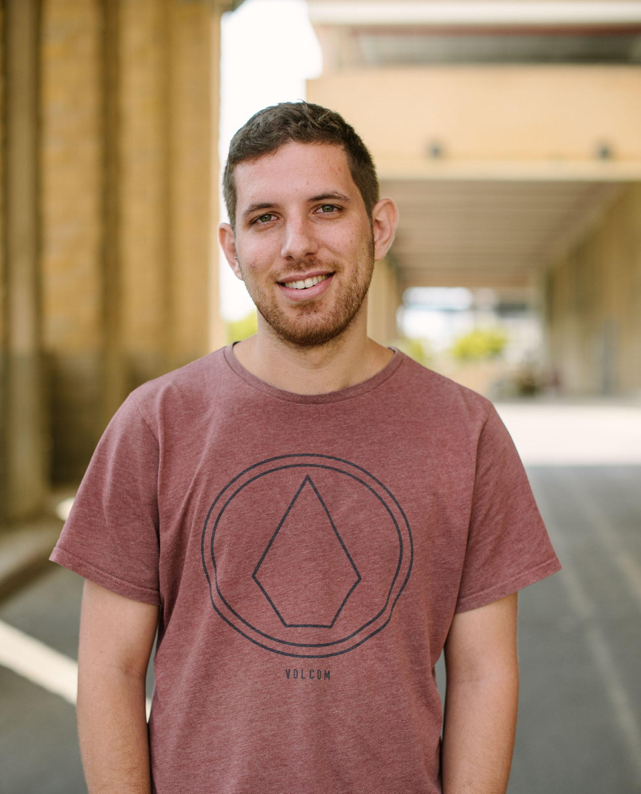

I am a mathematics Ph.D. student at Tel Aviv University under the supervision of Professor Leonid Polterovich and Professor Yael Karshon. My field of research is symplectic geometry. Currently, I am mainly interested in symplectic torus actions, methods of generating functions, and Floer theory.
If you survived until now, here are some random facts about me. Outside of academia, I used to work as a software engineer at Starkware, and as a cybersecurity researcher at Claroty. I really love mathematical riddles so feel free to send me your favorite ones! A long long time ago, I participated in the International Physics Olympiad (IPHO), and won a silver medal. When I find the time, I volunteer as a teacher for Israel’s IPHO team. Here is a picture of my dog Leah.